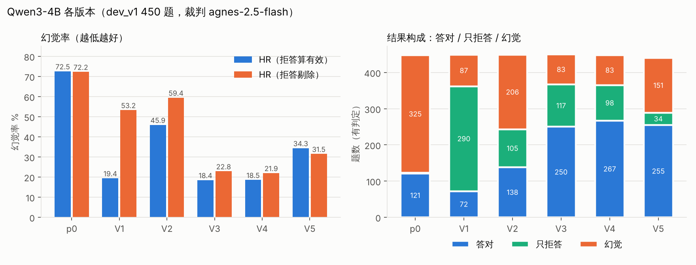
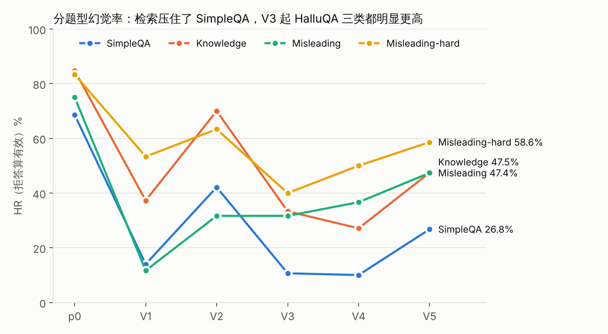
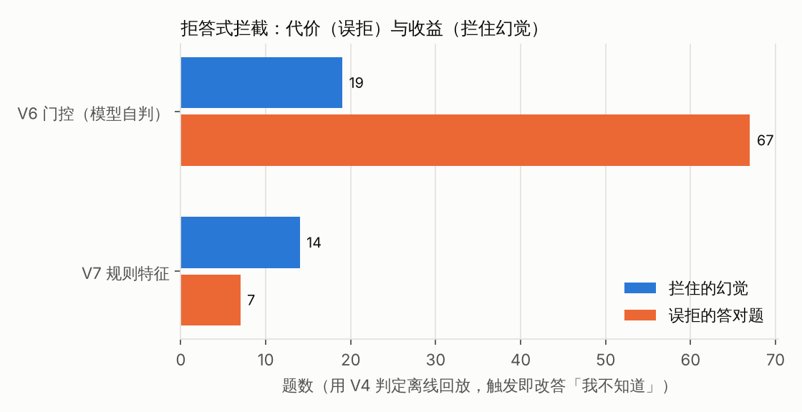
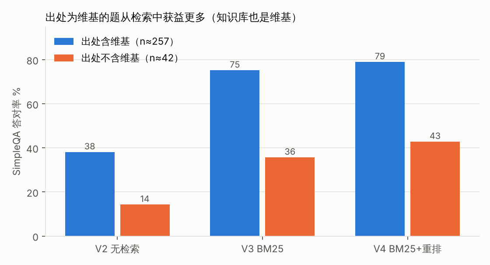

两种 HR 口径 + 答对数
「拒答算有效」口径下全拒答可得 0%，会奖励过度拒答；「拒答剔除」口径只看模型敢答的题，但有选择效应。所以三个数一起报：V1 的 HR 是 19.4%，拒答剔除口径却是 53.2%，答对从 121 掉到 72。
Qwen3-4B / 8B 的提示约束、维基检索与拦截实验：一个人完成评测集、指标、裁判、统计检验与复现
从 Chinese SimpleQA 与 HalluQA 分层抽 450 题中文开发集，从原样作答（p0）出发，逐版加提示约束、维基检索、重排、前提核查、门控与规则拦截（V1～V7，Qwen3-4B），再迁移到 Qwen3-8B（V8）。
LLM 裁判只依据标准答案给「幻觉 / 拒答」两个标签；每版同时报两种幻觉率（HR）口径和答对数，相邻版本做配对 McNemar 检验并做多重比较校正。
所有数字都是本地 LLM 裁判给出的代理指标（单裁判、单次采样、开发集），不是官方成绩；由 scripts/reproduce_metrics.py 从已有判定一键重算。
每版只改一处、事先写下假设和判据。HR 未注明时为「拒答算有效」口径；V6、V7 用 V4 的判定离线回放。
HR 72.5%，答对 121；几乎不拒答（拒答率 2.7%），长回答里在正确核心旁夹带编造的年份、人名。
HR 降到 19.4%，但拒答率 65.7%，答对反降到 72。只看「拒答算有效」口径会把它误读成大进步。
答对回到 138，幻觉也涨回 206（HR 45.9%）：只改提示词，只能在拒答和幻觉之间二选一。
相邻版本里唯一让幻觉减少、答对增加且都显著的一步：配对幻觉 206 → 83（p<0.001），答对 138 → 249（p<0.001）。
幻觉持平（只 V3 幻觉 38 / 只 V4 幻觉 38），答对 248 → 267（p=0.018，Holm 校正后 p=0.092，只算倾向）。HR 18.5%，拒答剔除口径 21.9%。
配对幻觉 82 → 151，SimpleQA 的 HR 10.0% → 26.8%：泛化的挑错指令传染到了正常题。
拦住 19 个幻觉，却误拒 67 道答对题；SimpleQA 触发 73/300，触发与否和会不会幻觉基本无关。
拦住 14 个、误拒 7 个，区分力明显好于 V6，但「拼诗」「星座」类规则会误伤正常题。
原样 67.9% → V4 同配置 29.5% → V8 27.1%；配对幻觉 129 → 117（p=0.036，Holm 校正后 p=0.143）。改善集中在误导题（配对 10 题修好、0 题变坏，p=0.002），但提示是照同一开发集的错例写的，要在留出集上确认。
图由 scripts/make_figures.py 从同一份重算结果生成，点图可看原图。




重点不在把某个数字做低，而在让每个数字经得起追问。
「拒答算有效」口径下全拒答可得 0%，会奖励过度拒答；「拒答剔除」口径只看模型敢答的题，但有选择效应。所以三个数一起报：V1 的 HR 是 19.4%，拒答剔除口径却是 53.2%，答对从 121 掉到 72。
相邻版本只用两边都有判定的题，做精确 McNemar 检验；全文 14 个检验做 Holm 校正后，V3→V4 的答对增加（p=0.018 → p=0.092）和 V8 的幻觉减少（p=0.036 → p=0.143）不再显著，报告里如实降级为「倾向」。
把开发集、作答和裁判逐条判定导入 SQLite（五张表），用纯 SQL 重算报告三张主表、离线回放和配对转移表，与 Python 输出逐项比对：521 项，一致 521 项。另有 8 条分析型查询，用到窗口函数、CTE 和自连接。
在仓库根目录运行（不调用任何模型或付费 API，不需要 GPU）：
python scripts/reproduce_metrics.py
python scripts/check_sql.py
python scripts/judge_agreement.py
python scripts/check_site_numbers.py本页为纯静态单文件，本地双击即可打开；链接到的 Markdown 在本地打开时显示为原文。